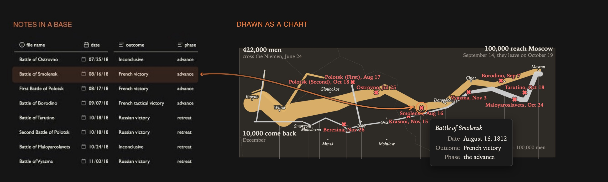

Your Obsidian bases, visualised.
A base already gathers your notes and their properties. Agate draws that base as a live chart — maps, networks, timelines, dashboards, headline numbers — and redraws it the moment you edit a note. Under the hood it's Vega and Vega-Lite, a mature grammar with a huge public gallery, so you never run out of chart types.
- maps & globes
- networks
- timelines
- headline numbers
- flows
- hierarchies
- habit grids
- linked dashboards


how it works
why agate
A real visualisation grammar, not a short menu of charts.
Agate's charts are Vega and Vega-Lite specs. Vega is a visualisation grammar — a declarative JSON language for describing a chart, built at the University of Washington's Interactive Data Lab. You state what the data is and how it maps to marks, scales and axes, and the grammar draws it. So one language spans a bar chart and a force-directed network alike, every chart is a plain file you can read, version and reuse, and a decade of public examples is yours to borrow. You can hand-write a static spec, adapt a gallery example, or have Agate generate one — it's the same JSON either way.
{
"mark": "bar",
"data": { "name": "books_base" },
"encoding": {
"x": { "field": "note.genre" },
"y": {
"aggregate": "mean",
"field": "note.rating"
}
}
}Built on Vega & Vega-Lite
A decade-old visualisation grammar from the UW Interactive Data Lab, with a large public example gallery and an online editor. Battle-tested, documented, and still growing — you inherit all of it.
One language, any chart
Statistical charts, maps and globes, force-directed networks, hierarchies, sankeys, custom layouts — all the same declarative JSON. If you can describe it, the grammar can draw it.
Plain JSON, exportable
Specs are ordinary Vega. Export SVG or PNG, prototype in the online editor, reuse the same file across bases and vaults, and share with people who have never opened Obsidian.
Charts you can use
Tooltips with images, brushing, linked views, and click any mark to open the note behind it. A chart becomes a way to move around your vault, not just a picture of it.
simple to make
You don't have to write the JSON.
Open a base, add an Agate view, and Pick a recipe — Agate asks which property goes where and writes the spec. Or hit Copy prompt for an LLM: it packs your base's properties and sample rows with the rules Agate needs, so you describe the chart in words and paste back a working spec. Prefer to author it yourself? Every spec is a plain file you can edit by hand.
more it can do
It reaches past the base.
A chart isn't limited to the properties in the view. A spec can fetch from the web, load each note's own data, sum the base into headline counters, or draw on a real map. See the full gallery →

Fetched from the web
A note can carry a URL: a cover for the tooltip, or a dataset. Remote data loads only once you allow it.
How to →
Each note's own data
Point each note at a CSV or a URL; Agate loads one dataset per note. Here, twelve market notes, each with its own FRED series.
How to →
Aggregate counters
Counts, sums and averages over the base as big headline numbers that update with every note. Vega does the maths.
How to →
Set the basemap
Real map tiles under your routes: topo, hillshade or satellite, keyless out of the box. Keyed providers read their token from an environment variable.
How to →